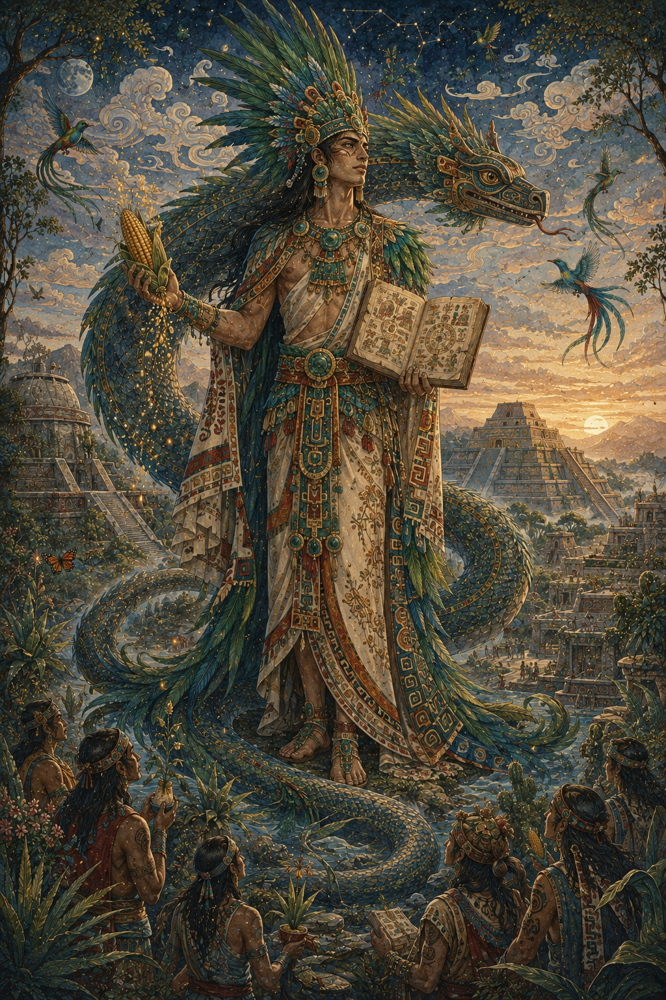
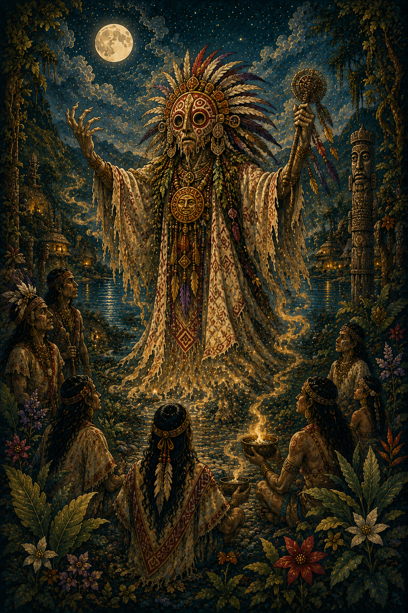
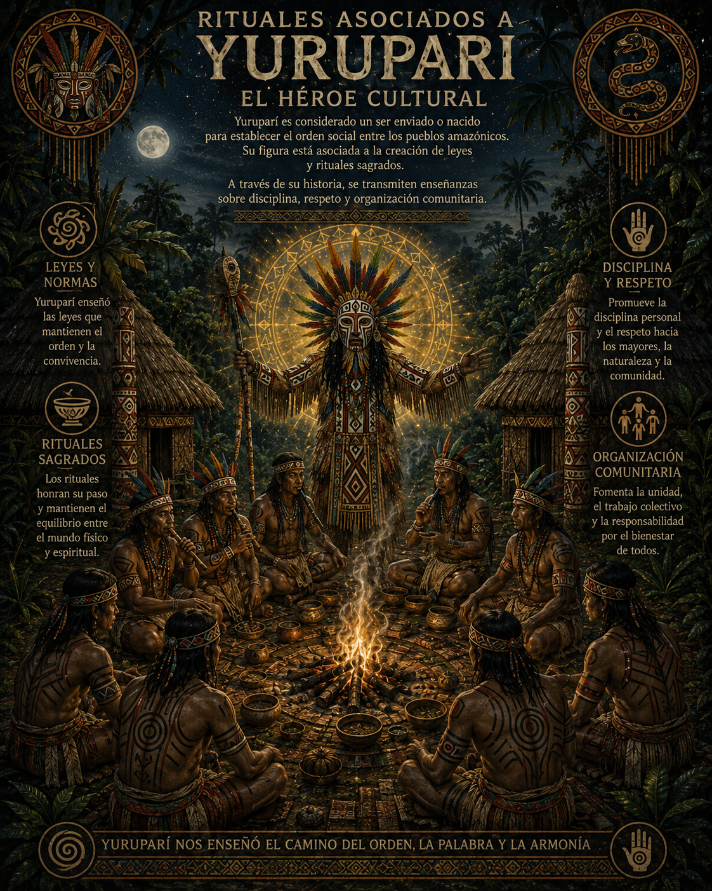
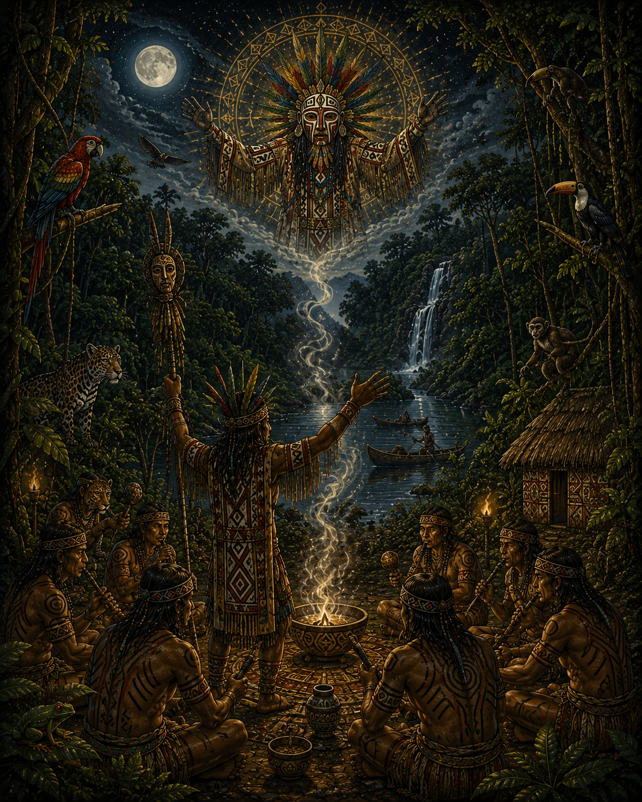
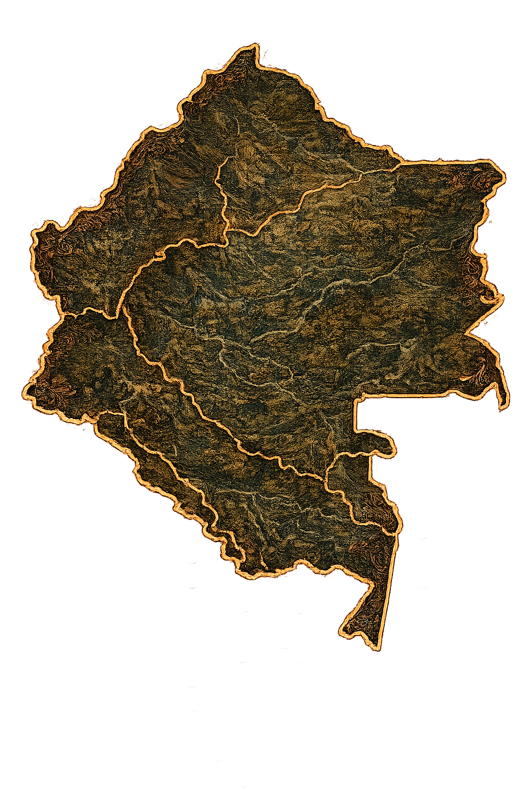
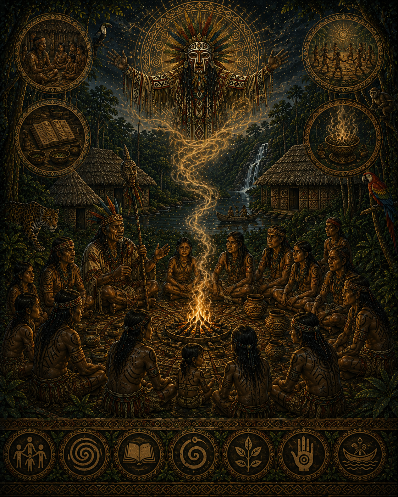
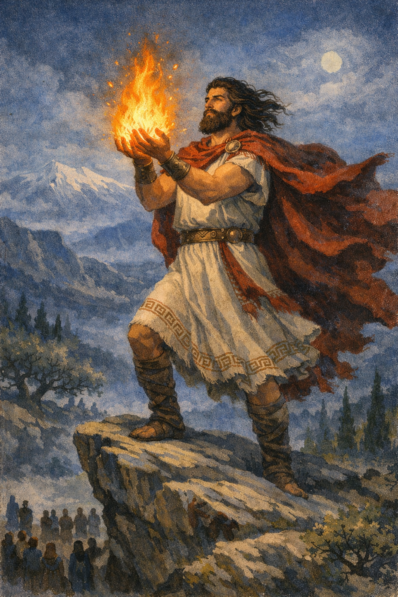

Quetzalcóatl
Dios mesoamericano asociado al conocimiento, la cultura y la civilización.
Yuruparí es uno de los relatos más importantes de la tradición amazónica y del noroeste amazónico colombiano. Es considerado un héroe cultural y una figura mítica asociada a la ley, el orden y la transmisión del conocimiento.
Su historia está vinculada a la formación de normas sociales, rituales sagrados y enseñanzas que organizan la vida de las comunidades indígenas.

Yuruparí es considerado un ser enviado o nacido para establecer el orden social entre los pueblos amazónicos. Su figura está asociada a la creación de leyes y rituales sagrados.
A través de su historia, se transmiten enseñanzas sobre disciplina, respeto y organización comunitaria.


El mito de Yuruparí está estrechamente relacionado con rituales de iniciación masculina, donde se transmiten conocimientos ancestrales y secretos espirituales.
Estos rituales simbolizan el paso de la infancia a la adultez dentro de la comunidad.
Yuruparí no solo representa un personaje mítico, sino también la transmisión oral del conocimiento indígena.
Sus relatos han sido fundamentales para preservar la memoria cultural y espiritual de los pueblos amazónicos.

El mito de Yuruparí pertenece a los pueblos indígenas de la región amazónica y del Vaupés en Colombia, así como áreas del noroeste amazónico en Brasil.
Esta zona se caracteriza por su enorme diversidad cultural y lingüística, donde la tradición oral es fundamental.


Yuruparí representa la organización social, la transmisión del conocimiento y la importancia de los rituales dentro de las comunidades indígenas amazónicas.
Su historia simboliza la conexión entre espiritualidad, educación y tradición oral como base de la cultura.

Dios mesoamericano asociado al conocimiento, la cultura y la civilización.

Titán griego que robó el fuego para la humanidad, símbolo del conocimiento y la enseñanza.

Dios creador andino vinculado a la civilización y el orden del mundo.